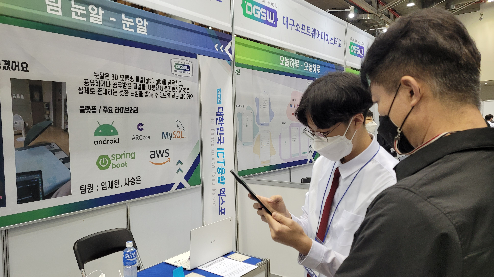

Tracing My Steps: 1,095 Days of Reflection
Honestly, I didn't intend to go to college. Because I was skeptical about the culture of going to college for employment, and learning study that doesn't want.
Instead of going college, I want to get a job early and I want to do what I truly want. So, I didn't go to general high school, instead i go to meister high school where i could get a job early.
I want to be a programmer, so the school I went to is DGSW(Daegu Software Meister High School).
In first grade, I excited because the school culture is so different from middle school. I was so free, I can use labtop in class time, I can study programming, database or network, not Literature, Mathematics, and Science.
But I think the dormitory life was a bit difficult. Snoring of roomates, waking up at 6 a.m. and doing moring exercise. I still remember them.
Also the morning song gave me hard time. Why? Acrroding to system error, the same song played for over 2 months. Still, I don't know why broadcasting department do anything.
I think my first grade is spent very fast, and really it is short because it was Covid-19. I was able to enter late(maybe it was June.).
Though, School project is so funny. I can develop program that I plan and design with my team, although it was like amateurs.
I chose my way as programmer, that is Android Developer who is develop android application. There are no special reason. Front-end Developer(Web devleoper) is so popular. Half students were chose front-end developer. And Back-end developer(Server Engineer) looked difficult and complicated. And I can't be IOS Developer who develop application for Apple's mobile platform, because I didn't have iphone and MacBook(not able on Windows OS).
So I started study Android Application for 1 year.

But when I became second grade, I also studied server programming. Because I learned a lot about basic programming and understood how to work internet, network, database.
And the most important reason is practical reason, the fact that was Backend developer usually get a higher salary.
Anyway, so I did both Android programming and Server Programming.
Second grade is the busiest grade. First grade only study basically programming. Third grade do not start additional project, just organize portfolio and prepare for an corperate interview.
Second grade must did many project with studying for one's major. I did also.
But there's a big adventage for second grade. In dormitory, Second grade is king actually. Because Third grade is not there when second term, almost they were already get a job. And first graders haven't gotten used to it yet.
We knew perfectly rule about dormitory and also weak point.
So I did a little misconduct(not serious), like to cook boiled meat with an electric pot in the dorm.
I played a lot, but I didn't just play. I did also project for Seoul COEX Exhibition and Daegu Exhibition & Convention Center. I participated in one as Android developer and one as server engineer.

Excepteur sint occaecat cupidatat non proident, sunt in culpa qui officia deserunt mollit anim id est laborum. 고등학교 3학년, 성장을 마무리하고 새로운 세계로 나아가는 영웅의 여정(The Hero's Journey)의 정점입니다. 수험 생활의 압박 속에서 나 자신과의 연결(Connection with the self)을 어떻게 이뤄냈는지 서술하세요.